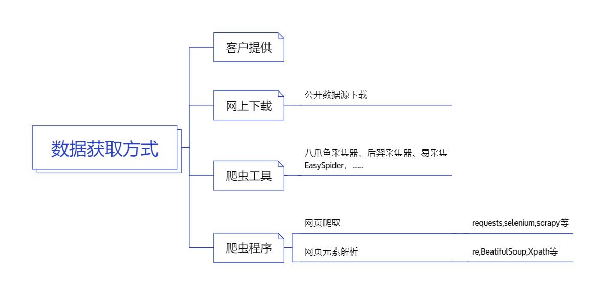
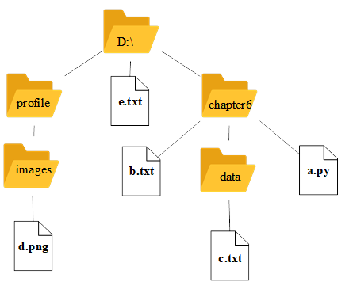
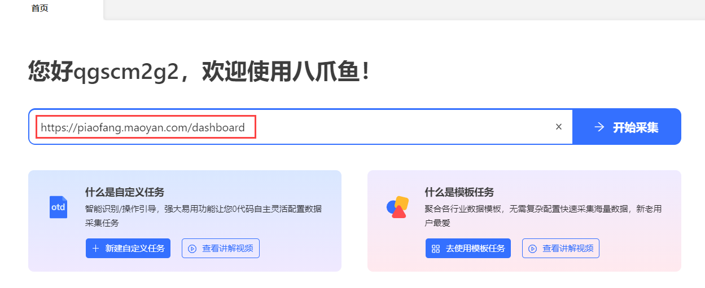
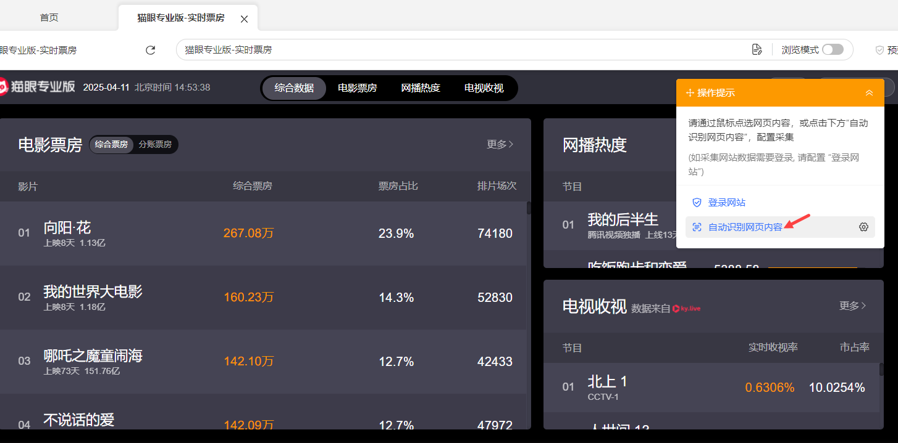
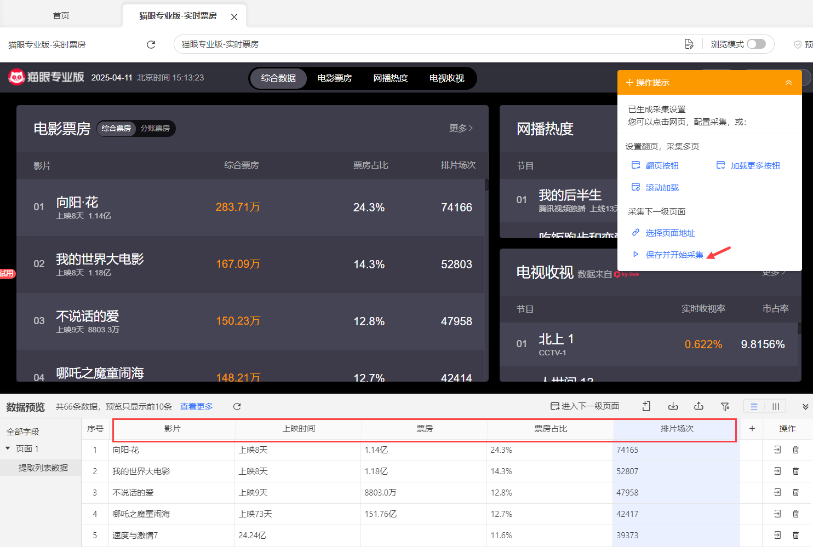
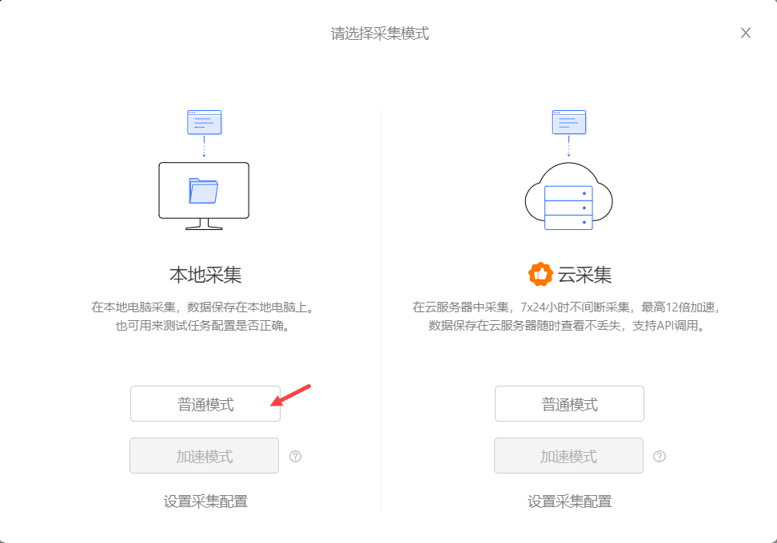
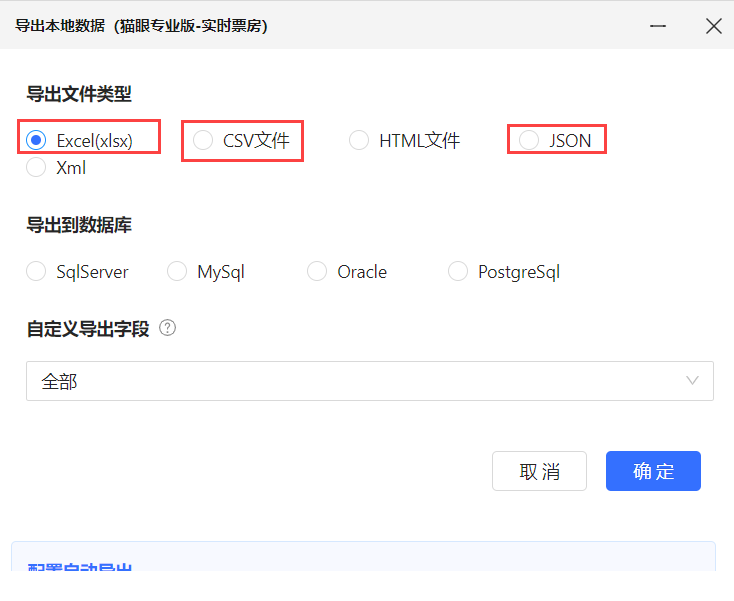

你是否好奇过，为什么抖音能精准推荐你喜欢的视频？为什么淘宝知道你需要买什么？这一切都离不开数据！本案例将带你探索数据的获取与读写，解锁AI时代的秘密武器。数据与算法就如同工业时代的煤炭与蒸汽机的关系一样，数据是人工智能时代的新能源。
数据获取和读写是数据分析的第一步，数据的数量和质量直接影响后续的分析结果。本案例将介绍常用的数据获取方式及常见数据格式文件的读写。
Python环境、pandas库、openpyxl库。
pandas及openpyxl的安装命令：
pip install pandas openpyxl -i https://pypi.tuna.tsinghua.edu.cn/simple常见的数据获取方式如图5-1所示。

图5-1 常用数据获取方式
从互联网自动获取数据需遵循法律法规、网站规则和道德伦理，具体规则如下：
常用数据文件格式及特点如下，详细对比见表5-1：
表5-1 数据文件格式对比
| 格式 | 扩展名 | 特点 | 适用场景 | 编辑工具 |
|---|---|---|---|---|
| TXT | .txt | 纯文本，无结构 | 日志记录、简单数据存储 | 任何文本编辑器 |
| CSV | .csv | 表格数据，轻量级 | 数据交换、Excel兼容 | 文本编辑器/Excel/WPS |
| JSON | .json | 键值对结构，易读 | Web数据传输、配置文件 | 文本编辑器/专用工具 |
| Excel | .xlsx/.xls | 富文本表格，支持公式 | 数据分析、可视化 | Excel/WPS |
文件路径分为绝对路径和相对路径，项目开发中推荐使用相对路径（便于移植）：
从文件系统根目录开始的完整路径，如：
D:\chapter6\data\c.txt（Windows）、/home/user/chapter6/data/c.txt（Linux/macOS）。
特点：唯一无歧义，但路径长、易失效。
以当前工作目录为参照的路径，如：
./file.txt（当前目录）、../images/photo.jpg（上级目录）。
特点：简洁灵活，依赖当前目录环境。
如图5-2所示的Windows目录结构：

图5-2 目录结构
当前目录为"chapter6"目录，在a.py文件中读取各文件的相对路径：
b.txtdata/c.txt../e.txt利用八爪鱼采集器采集猫眼票房数据，将采集到的数据分别保存为.xlsx,.csv,.json格式。然后对对采集到的各格式数据进行读写操作。

图5-3 八爪鱼首页

图5-4 自动识别网页

图5-5 保存采集设置

图5-6 本地采集
D:\chapter6\data\mypf.xlsxD:\chapter6\data\mypf.csvD:\chapter6\data\mypf.json
图5-7 文件类型选择
Python文件操作基本流程：打开→操作→关闭，推荐使用with上下文管理器（自动关闭文件，避免资源泄漏）。
# 例5_1：读txt文件（使用with上下文管理器）
with open('data/cucinfo.txt', 'r', encoding='utf-8') as file:
txt = file.read() # 读取全部内容
# 其他读取方法：
# txt = file.readline() # 读取一行
# txt = file.readlines() # 读取所有行，返回列表
print(txt)# 将读取的内容写入新文件
with open('temp/cuc.txt', 'w', encoding='utf-8') as fp:
fp.write(txt) # 写入字符串
# 写入列表（需手动加换行符）
# lines = ['第一行\n', '第二行\n']
# fp.writelines(lines)文件打开模式说明（表5-2）：
表5-2 文件打开模式
| 模式 | 含义 |
|---|---|
| 'r' | 只读模式，文件不存在则报错（FileNotFoundError） |
| 'w' | 覆盖写模式，文件不存在则创建，存在则清空内容 |
| 'a' | 追加写模式，文件不存在则创建，存在则在末尾追加 |
| 'x' | 创建写模式，文件存在则报错（FileExistsError） |
| 'b' | 二进制模式（如读取图片、视频），需与r/w/a/x组合（如'rb'） |
| '+' | 读写模式，与r/w/a/x组合（如'r+'） |
使用Python标准库csv读写CSV文件，支持列表（reader）和字典（DictReader）两种读取方式。
# 读mypf.csv文件
import csv
# 方式1：csv.reader() → 返回列表（适合无表头或自定义解析）
with open(r'data/mypf.csv', 'r', encoding='utf-8-sig') as f:
reader = csv.reader(f)
for row in reader:
print(row) # 每行是列表，如：['向阳·花', '上映8天', '1.14亿', ...]
# 方式2：csv.DictReader() → 返回字典（适合带表头，键为列名）
with open(r'data/mypf.csv', 'r', encoding='utf-8-sig') as f:
reader = csv.DictReader(f)
for row in reader:
print(row) # 每行是字典，如：{'影片':'向阳·花', '上映时间':'上映8天', ...}#将成绩数据写入cj.csv
import csv
# 待写入数据（表头+内容）
data = [
['学号', '姓名', '成绩'],
['20230001', '张三', '89'],
['20230002', '李四', '98'],
['20230003', '王五', '75'],
['20230004', '赵六', '100']
]
# 写入CSV（newline=''避免空行）
with open(r'temp/cj.csv', 'w', newline='', encoding='utf-8') as file:
writer = csv.writer(file)
writer.writerows(data) # 写入多行
# 写入单行：writerow(['20230005', '孙七', '92'])
注：若CSV文件使用非逗号分隔符（如制表符），可通过delimiter参数指定：
with open(r'data/chipotle.csv', 'r', encoding='utf-8') as f:
reader = csv.reader(f, delimiter='\t') # 制表符分隔
使用Python内置json模块，支持load/dump（文件操作）和loads/dumps（字符串操作）。
import json
with open(r'data/mypf.json', 'r', encoding='utf-8') as f:
loaded_data = json.load(f) # 读取JSON文件，返回Python对象（列表/字典）
print(loaded_data) # 输出：[{'影片':'向阳·花', ...}, ...]
print(loaded_data[0]['影片']) # 访问第一个影片名：向阳·花# 将读取的数据写入output.json
with open('temp/output.json', 'w', encoding='utf-8') as f:
# ensure_ascii=False：保留中文（不转义为\uXXXX）
# indent=4：格式化缩进，增强可读性
json.dump(loaded_data, f, ensure_ascii=False, indent=4)
使用第三方库pandas读写Excel文件，需额外安装openpyxl（支持.xlsx格式）。
import pandas as pd
# 基础读取（读取第一个工作表）
df = pd.read_excel('data/mypf.xlsx')
# 解决中文列名对齐问题
pd.set_option('display.unicode.ambiguous_as_wide', True)
pd.set_option('display.unicode.east_asian_width', True)
print(df) # 输出DataFrame对象
# 进阶读取（指定工作表、行索引、列名）
# df = pd.read_excel(
# 'data/cuclqx.xlsx',
# sheet_name='电子产品', # 指定工作表（名称/索引）
# index_col=0, # 第0列作为行索引
# header=0 # 第0行作为列名
# )# 将DataFrame写入新Excel文件
df.to_excel(
'temp/mypf_new.xlsx',
index=False, # 不写入行索引
sheet_name='票房数据', # 工作表名称
engine='openpyxl' # 写入引擎（支持.xlsx）
)pandas读写常用文件方法（表5-4）：
表5-4 Pandas读写常用文件方法
| 文件格式 | 读操作 | 写操作 |
|---|---|---|
| CSV | pd.read_csv() | df.to_csv() |
| Excel | pd.read_excel() | df.to_excel() |
| JSON | pd.read_json() | df.to_json() |
| HTML | pd.read_html() | df.to_html() |
错误提示：FileNotFoundError: [Errno 2] No such file or directory
解决方案：检查文件路径是否正确（推荐相对路径），确保文件存在于指定目录。
错误提示：OSError: [Errno 22] Invalid argument
解决方案：路径中反斜杠“\”需转义：
(1) 加r前缀：r'data\ncuc.txt'
(2) 双反斜杠：'data\\ncuc.txt'
(3)
正斜杠：'data/ncuc.txt'
错误提示：UnicodeDecodeError: 'gbk' codec can't decode byte
解决方案：指定正确编码格式，中文常用encoding='utf-8'或'utf-8-sig'（含BOM的UTF-8）。
本案例核心内容：
反思：